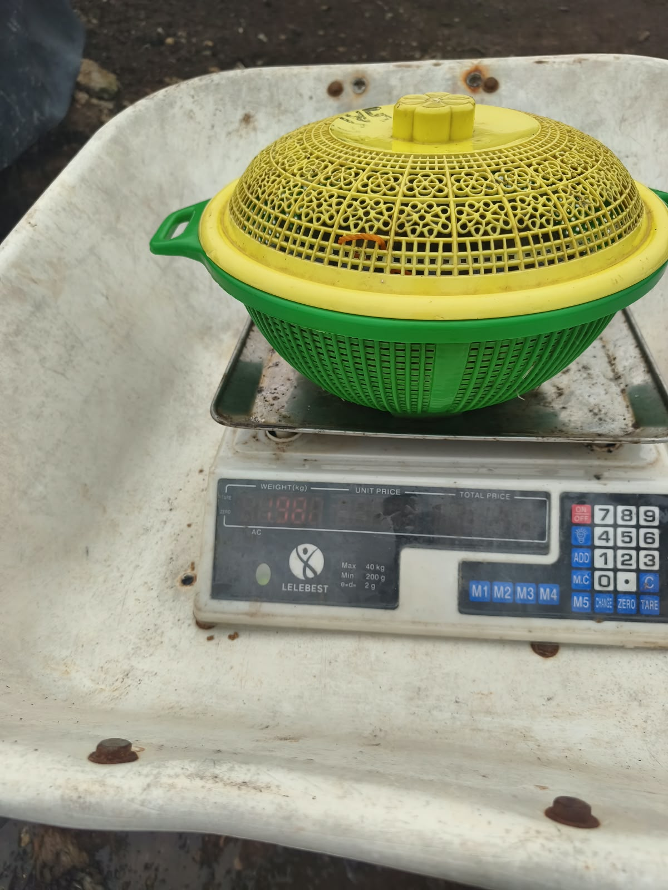

Galeri dokumentasi
Foto dan video dokumentasi tambak CV Vaname Bahari Nusantara: mulai dari persiapan kolam terpal HDPE, aklimatisasi & penebaran benur, sistem aerasi, hingga panen parsial dan panen akhir.
Foto dokumentasi
Kawasan tambak 20 ha dan penanganan panen udang.

Kawasan tambak udara: instalasi water treatment dan kolam produksi.

Tata letak kolam: kolam terpal HDPE outdoor terisolasi dari tanah.

Hasil panen: penimbangan udang vaname segar langsung di tambak.
Video dokumentasi operasional
Rangkaian rekaman video tahapan budidaya dari persiapan kolam hingga panen.
Persiapan kolam: kondisi kolam kering berlapis terpal HDPE.
Konstruksi kolam: inspeksi sisi tanggul kolam terpal.
Aerasi budidaya: operasional aerator di kolam produksi aktif.
Aklimatisasi benur: penyesuaian suhu dan alkalinitas sebelum tebar.
Penebaran benur: pelepasan benih udang ke kolam (DOC 1).
Proses panen: penjaringan udang vaname dari kolam.
Penanganan panen: pengumpulan dan seleksi hasil panen.
Panen akhir: pemanenan total pada kisaran DOC 115–120 hari.